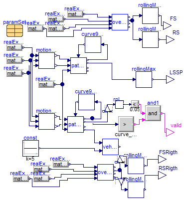

Package Content
Parameters
| Type | Name | Default | Description |
|---|
| Length | L[nu, na] | [0, -3, -4.37; 0, -1.3, -2.6... | [m] |
| Length | X[nu] | {-1.3647,2.0656,0.0609,1.7499} | [m] |
| Mass | m[nu] | {9841,33101,3200,33800} | Masses [kg] |
| Integer | nu | 4 | Number of units |
| Integer | na | 3 | Max number of axles per unit |
Connectors
| Type | Name | Description |
|---|
| output RealOutput | a_y_out[vehicle.nu] | |
| input RealInput | a_y_first | Input signal 1 (u1 = u2) |
| input RealInput | vx_in | First unit velocity input |
Modelica definition
model AccInput
VehicleModels.SingleTrack vehicle(steadystate=false,
L=L,
X=X,
m=m,
nu=nu,
na=na);
Modelica.Blocks.Math.InverseBlockConstraints inverseBlockConstraints;
Modelica.Blocks.Interfaces.RealOutput a_y_out[vehicle.nu];
parameter Modelica.SIunits.Length L[nu,na]=[0,-3,-4.37; 0,-1.3,-2.6; 0,-1.3,
0; 0,-1.3,-2.6];
parameter Modelica.SIunits.Length X[nu]={-1.3647,2.0656,0.0609,1.7499};
parameter Modelica.SIunits.Mass m[nu]={9841,33101,3200,33800} ;
parameter Integer nu=4 ;
parameter Integer na=3 ;
Modelica.Blocks.Interfaces.RealInput a_y_first ;
Modelica.Blocks.Interfaces.RealInput vx_in ;
equation
a_y_out = vehicle.ay;
connect(vehicle.delta_in, inverseBlockConstraints.y2);
connect(inverseBlockConstraints.u1, a_y_first);
connect(vehicle.vx_in, vx_in);
connect(vehicle.ay_out[1, 1], inverseBlockConstraints.u2);
end AccInput;
Modelica definition
model TestPathPosition
Components.PathPosition pathPosition;
Modelica.Blocks.Sources.RealExpression realExpression(y=vehicle.vehicle.vy[1] +
vehicle.vehicle.Lcog[1, 1]*vehicle.vehicle.wz[1]);
Modelica.Blocks.Sources.RealExpression realExpression1(y=vehicle.vehicle.pz[1]);
AccInput vehicle;
Modelica.Blocks.Sources.Constant const(k=5);
Modelica.Blocks.Math.MultiProduct multiProduct(nu=3);
Components.Curve90deg curve90deg;
Modelica.Blocks.Sources.RealExpression realExpression3(y=vehicle.vehicle.d_vy[
1] + vehicle.vehicle.d_wz[1]*vehicle.vehicle.Lcog[1, 1] + vehicle.vehicle.vx[
1]*vehicle.vehicle.wz[1]);
equation
connect(realExpression.y, pathPosition.vy);
connect(realExpression1.y, pathPosition.pz);
connect(const.y, vehicle.vx_in);
connect(const.y, multiProduct.u[1]);
connect(const.y, multiProduct.u[2]);
connect(pathPosition.vx, const.y);
connect(curve90deg.y, pathPosition.c);
connect(pathPosition.s_out, curve90deg.u);
connect(curve90deg.y, multiProduct.u[3]);
connect(vehicle.a_y_first, multiProduct.y);
end TestPathPosition;

Information
Extends from Modelica.Blocks.Interfaces.SISO (Single Input Single Output continuous control block).
Parameters
| Type | Name | Default | Description |
|---|
| Length | radius | 12.5 | Curve radius [m] |
| Real | s_change | 0.001 | Distance for curvature change |
| Position | s_start | 50 | Position along path when curve starts [m] |
Connectors
| Type | Name | Description |
|---|
| input RealInput | u | Connector of Real input signal |
| output RealOutput | y | Connector of Real output signal |
Modelica definition
block Curve90deg2
extends Modelica.Blocks.Interfaces.SISO;
parameter Modelica.SIunits.Length radius=12.5 ;
parameter Real s_change=0.001 ;
parameter Modelica.SIunits.Position s_start=50
;
Real curvature(start=0);
protected
parameter Real s_length = radius*Modelica.Constants.pi/2;
parameter Real s0 = 0;
parameter Real s1 = s_start;
parameter Real s2 = s_start + s_change;
parameter Real s3 = s_start + s_change + s_length;
parameter Real s4 = s_start + s_change + s_length + s_change;
equation
when initial()
then
der(curvature) = 0;
elsewhen u>s1
then
der(curvature) = (1/radius)/s_change*
der(u);
elsewhen u>s2
then
der(curvature) = 0;
elsewhen u>s3
then
der(curvature) = -(1/radius)/s_change*
der(u);
elsewhen u>s4
then
der(curvature) = 0;
end when;
y =
smooth(2,curvature);
end Curve90deg2;
Modelica definition
Modelica definition
model TestPathPosition3
Components.PathPosition pathPosition(s0=0, n0=0);
Modelica.Blocks.Sources.RealExpression realExpression(y=vehicle.vy[1] +
vehicle.Lcog[1, 1]*vehicle.wz[1]);
Modelica.Blocks.Sources.RealExpression realExpression1(y=vehicle.pz[1]);
VehicleModels.SingleTrack
vehicle(mode=3);
Modelica.Blocks.Sources.Constant const(k=5);
Components.Curve90deg curve90deg;
Modelica.Blocks.Math.Add3 add(
k1=-100, k2=-100);
Modelica.Blocks.Sources.RealExpression realExpression2(y=vehicle.pz[1] -
pathPosition.pp);
inner Vehicles.Vehicles.Adouble6x4 paramSet;
equation
connect(realExpression.y, pathPosition.vy);
connect(realExpression1.y, pathPosition.pz);
connect(const.y, vehicle.vx_in);
connect(pathPosition.vx, const.y);
connect(pathPosition.s_out, curve90deg.u);
connect(curve90deg.y, pathPosition.c);
connect(add.u1, pathPosition.n_out);
connect(add.u2, pathPosition.d_n_out);
connect(add.y, vehicle.delta_in);
connect(realExpression2.y, add.u3);
end TestPathPosition3;
Modelica definition
Parameters
Modelica definition
Modelica definition
Modelica definition
Parameters
| Type | Name | Default | Description |
|---|
| Mass | m | 25000 | Vehicle mass [kg] |
| Length | w | 2 | Track width [m] |
| Position | h | 2 | C.g. height [m] |
Modelica definition
Parameters
| Type | Name | Default | Description |
|---|
| Mass | m1 | 25000 | Vehicle mass [kg] |
| Mass | m2 | 25000 | Vehicle mass [kg] |
| Length | w1 | 2 | Track width [m] |
| Position | h1 | 2 | C.g. height [m] |
| Length | w2 | 2 | Track width [m] |
| Position | h2 | 2 | C.g. height [m] |
Modelica definition
Parameters
| Type | Name | Default | Description |
|---|
| Mass | m1 | 25000 | Vehicle mass [kg] |
| Mass | m2 | 25000 | Vehicle mass [kg] |
| Length | w1 | 2 | Track width [m] |
| Position | h1 | 2 | C.g. height [m] |
| Length | w2 | 2 | Track width [m] |
| Position | h2 | 2 | C.g. height [m] |
Modelica definition
Parameters
| Type | Name | Default | Description |
|---|
| Mass | m1 | 25000 | Vehicle mass [kg] |
| Mass | m2 | 25000 | Vehicle mass [kg] |
| Length | w1 | 2 | Track width [m] |
| Position | h1 | 2 | C.g. height [m] |
| Length | w2 | 2 | Track width [m] |
| Position | h2 | 2 | C.g. height [m] |
Modelica definition
Parameters
| Type | Name | Default | Description |
|---|
| Integer | nu | 3 | Number of units |
| Mass | m[nu] | 23000*ones(nu) | Total mass of each unit [kg] |
| Length | w[nu] | 2*ones(nu) | Track width (average for the axles on each unit) [m] |
| Position | h[nu] | 2*ones(nu) | C.g. height [m] |
Modelica definition
Parameters
| Type | Name | Default | Description |
|---|
| Integer | nu | 3 | Number of units |
| Mass | m[nu] | {23000,23000,23000} | Total mass of each unit [kg] |
| Length | w[nu] | 2*ones(nu) | Track width (average for the axles on each unit) [m] |
| Position | h[nu] | {2,2,2} | C.g. height [m] |
| RotationalSpringConstant | kc[nu] | {5000000,5000000,5000000} | Roll stiffness [N.m/rad] |
| Position | rollcenter[nu] | zeros(nu) | Roll center height [m] |
Modelica definition
Count number of connected true values in boolean vector
Inputs
Outputs
| Type | Name | Description |
|---|
| Integer | n | Number of connected sets |
Modelica definition
function CountConnected
input Boolean b[:];
output Integer n ;
algorithm
n:=1;
for i in 2:length(b) loop
if b[i] and not b[i-1] then
n:=n + 1;
end if;
end for;
end CountConnected;
Determine moment coupled units
Inputs
Outputs
| Type | Name | Description |
|---|
| Torque | Msum[nc] | [N.m] |
Modelica definition
function MomentCouple
input Integer nu;
input Integer nc ;
input Boolean[nu-1] roll_couple;
input Modelica.SIunits.Torque M[nu];
output Modelica.SIunits.Torque Msum[nc];
protected
Integer i,j;
algorithm
i:=1;
j:=1;
Msum[i] := M[j] ;
for i
in 1:nu-1
loop
if roll_couple[i]
then
Msum[j] :=Msum[j] + M[i + 1];
else
j:=j + 1;
Msum[j] :=M[i + 1];
end if;
end for;
end MomentCouple;
Information
Extends from Manoeuvres.LowSpeedCurve.
Parameters
| Type | Name | Default | Description |
|---|
| Integer | nu | 2 | Number of units |
| Integer | na | 3 | Number of axles (max across all units) |
| Adouble6x4 | paramSet | OpenPBS.Vehicles.Functions.M... | |
| Length | curve_radius | 12.5 | [m] |
| Position | curve_start | 50 | Distance along path when curve starts [m] |
| Real | max_friction | 0.8 | Maximum allowed friction (for friction demand calculation) |
| SLX394 | tractorParam | | |
| CNC134 | semitrailerParam | | |
Connectors
| Type | Name | Description |
|---|
| output RealOutput | LSSP | Low speed swept path |
| output BooleanOutput | valid | True if Yaw damping was successfully calculated |
| output RealOutput | FS | Front Swing(rigth side) |
| output RealOutput | RS | Rear swing(rigth side) |
| output RealOutput | FDST | Friction demand on steer tyres |
| output RealOutput | FDDT | Friction demand on drive tyres |
Modelica definition
Parameters
| Type | Name | Default | Description |
|---|
| Integer | nu | 2 | |
| Integer | na | 3 | |
| VehicleModel | paramSet | OpenPBS.Vehicles.Functions.M... | |
| SLX394 | tractorParam | | |
| CNC134 | semitrailerParam | | |
Modelica definition
Parameters
| Type | Name | Default | Description |
|---|
| VehicleModel | paramSet | OpenPBS.Vehicles.Functions.M... | |
| SLX394 | tractorParam | | |
| CNC134 | semitrailerParam | | |
Modelica definition
Test low speed curve with front and rear overhang

Information
LSSP, Low Speed Swept Path
Manoeuvre:
- Speed=0+
- Friction=High
- Unit loading=Max load, evenly distributed
- guide: R=12.5 m, 90 deg
Measure:
LSSP=Max perpendicular distance from guide to follower.
Relevant alternatives and selection:
- guide=FAO, follower=worst of all other [HCTinSWE and OpenPBS]
- guide=FBO, follower=worst of all other [approx. Australia]
Present known issues with selected definition:
- Low or high mu? What value if hi (1?), and if low (0.35?)
- HCTinSWE and OpenPBS does not punish long overhang, e.g. city buses or “nose-built” cabins
- OpenPBS presently does not saturate axle forces to mu_max*F_z.

Extends from Modelica.Blocks.Icons.Block (Basic graphical layout of input/output block).
Parameters
| Type | Name | Default | Description |
|---|
| Integer | nu | 4 | Number of units |
| Integer | na | 3 | Number of axles (max across all units) |
| Adouble6x4 | paramSet | redeclare parameter Vehicles... | |
| Length | curve_radius | 12.5 | [m] |
| Position | curve_start | 50 | Distance along path when curve starts [m] |
Connectors
Modelica definition
model TestLowSpeedCurveFhRh
extends Modelica.Blocks.Icons.Block;
parameter Integer nu=4 ;
parameter Integer na=3 ;
Modelica.Blocks.Interfaces.RealOutput LSSP ;
Components.PathPosition pathPositionRight[nu,na](n0=0, s0=
vehicle.vehicle.rx0) ;
Modelica.Blocks.Sources.Constant const(k=5);
Components.Curve90deg curve90deg[nu,na](radius=curve_radius,
s_start=curve_start);
VehicleModels.DirectionInput vehicle(paramSet=paramSet,
nu=nu,
na=na);
replaceable parameter Vehicles.Vehicles.Adouble6x4 paramSet
constrainedby
Vehicles.Base.VehicleModel;
Modelica.Blocks.Sources.RealExpression realExpression3[nu,
na](y=
matrix(vehicle.vehicle.vy)*
ones(1, na));
Modelica.Blocks.Sources.RealExpression realExpression4[nu,
na](y=
matrix(vehicle.vehicle.pz)*
ones(1, na));
Modelica.Blocks.Sources.RealExpression realExpression5[nu,
na](y=
matrix(vehicle.vehicle.vx)*
ones(1, na));
Components.PathPosition pathPositionLeft[nu,na](s0=vehicle.vehicle.rx0,
n0=paramSet.w) ;
Components.Curve90deg curve90deg1[nu,na](radius=
curve_radius, s_start=curve_start);
Components.MotionOffset motionOffsetLeft[nu,na](x_offset=
vehicle.vehicle.Lcog, y_offset=paramSet.w/2)
;
Modelica.Blocks.Sources.RealExpression realExpression7[nu,
na](y=
matrix(vehicle.vehicle.wz)*
ones(1, na));
Components.MotionOffset motionOffsetRight[nu,na](x_offset=
vehicle.vehicle.Lcog, y_offset=-paramSet.w/2)
;
Manoeuvres.Blocks.RollingMax rollingMax(n1=nu, n2=na)
;
parameter Modelica.SIunits.Length curve_radius=12.5;
parameter Modelica.SIunits.Position curve_start=50
;
Modelica.Blocks.Interfaces.BooleanOutput valid
;
Modelica.Blocks.Logical.GreaterThreshold greaterThan(threshold=
curve_start + curve_radius*Modelica.Constants.pi/2);
Manoeuvres.Blocks.RollingMax rollingMax1(n1=nu, n2=na);
Modelica.Blocks.Math.Gain gain[nu,na](k=-1);
Modelica.Blocks.Logical.LessThreshold lessThan(threshold=0.05);
Modelica.Blocks.Logical.And and1;
Components.PathPosition90degCurve overHangCalculatorLeft[nu,2](
radius=curve_radius,
s_start=curve_start,
n0=paramSet.w,
y_offset=paramSet.w/2,
s0=vehicle.vehicle.rx0_oh,
nu=paramSet.nu,
na=paramSet.na,
x_offset=vehicle.vehicle.Lcog_oh);
Modelica.Blocks.Sources.RealExpression realExpression1[nu,2](y=
matrix(vehicle.vehicle.vx)
*
ones(1, 2));
Modelica.Blocks.Sources.RealExpression realExpression2[nu,2](y=
matrix(vehicle.vehicle.vy)
*
ones(1, 2));
Modelica.Blocks.Sources.RealExpression realExpression6[nu,2](y=
matrix(vehicle.vehicle.wz)
*
ones(1, 2));
Modelica.Blocks.Sources.RealExpression realExpression8[nu,2](y=
matrix(vehicle.vehicle.pz)
*
ones(1, 2));
Manoeuvres.Blocks.RollingMax rollingMax2(n1=nu, n2=1)
;
Modelica.Blocks.Interfaces.RealOutput FS ;
Manoeuvres.Blocks.RollingMax rollingMax3(n1=nu, n2=1)
;
Modelica.Blocks.Interfaces.RealOutput RS ;
Components.PathPosition90degCurve overHangCalculatorLeft1[nu,2](
radius=curve_radius,
s_start=curve_start,
s0=vehicle.vehicle.rx0_oh,
nu=paramSet.nu,
na=paramSet.na,
x_offset=vehicle.vehicle.Lcog_oh,
y_offset=-paramSet.w/2,
n0=0);
Modelica.Blocks.Sources.RealExpression realExpression9[nu,2](y=
matrix(vehicle.vehicle.vx)
*
ones(1, 2));
Modelica.Blocks.Sources.RealExpression realExpression10[
nu,2](y=
matrix(vehicle.vehicle.vy)
*
ones(1, 2));
Modelica.Blocks.Sources.RealExpression realExpression11[
nu,2](y=
matrix(vehicle.vehicle.wz)
*
ones(1, 2));
Modelica.Blocks.Sources.RealExpression realExpression12[
nu,2](y=
matrix(vehicle.vehicle.pz)
*
ones(1, 2));
Manoeuvres.Blocks.RollingMax rollingMax4(n1=nu, n2=1)
;
Manoeuvres.Blocks.RollingMax rollingMax5(n1=nu, n2=1)
;
Modelica.Blocks.Interfaces.RealOutput FSRigth ;
Modelica.Blocks.Interfaces.RealOutput RSRigth ;
Modelica.Blocks.Math.Gain gain1[nu,1](k=-1);
Modelica.Blocks.Math.Gain gain2[nu,1](k=-1);
equation
connect(pathPositionRight.s_out, curve90deg.u);
connect(curve90deg.y,pathPositionRight. c);
connect(vehicle.vx_in,const. y);
connect(pathPositionLeft.s_out, curve90deg1.u);
connect(curve90deg1.y,pathPositionLeft. c);
connect(realExpression4.y,pathPositionLeft. pz);
connect(realExpression5.y, motionOffsetLeft.vx);
connect(realExpression3.y, motionOffsetLeft.vy);
connect(realExpression7.y, motionOffsetLeft.wz);
connect(motionOffsetLeft.vx_offset, pathPositionLeft.vx);
connect(motionOffsetRight.vy_offset, pathPositionRight.vy);
connect(motionOffsetRight.vx_offset, pathPositionRight.vx);
connect(pathPositionLeft.n_out, rollingMax.u);
connect(rollingMax.y, LSSP);
connect(pathPositionRight[1, 1].pp_out, vehicle.front_direction_in);
connect(pathPositionRight.pz, realExpression4.y);
connect(motionOffsetLeft.vy_offset, pathPositionLeft.vy);
connect(motionOffsetRight.vx, realExpression5.y);
connect(motionOffsetRight.vy, realExpression3.y);
connect(motionOffsetRight.wz, realExpression7.y);
connect(greaterThan.u, pathPositionRight[
end, 1].s_out);
connect(gain.y, rollingMax1.u);
connect(gain.u, pathPositionRight.n_out);
connect(rollingMax1.y, lessThan.u);
connect(lessThan.y, and1.u1);
connect(greaterThan.y, and1.u2);
connect(and1.y, valid);
connect(realExpression1.y, overHangCalculatorLeft.vx);
connect(realExpression2.y, overHangCalculatorLeft.vy);
connect(realExpression6.y, overHangCalculatorLeft.wz);
connect(realExpression8.y, overHangCalculatorLeft.pz);
connect(rollingMax2.y,FS);
connect(overHangCalculatorLeft[:, 1].n_out, rollingMax2.u[:, rollingMax2.n2]);
connect(rollingMax3.y, RS);
connect(overHangCalculatorLeft[:, 2].n_out, rollingMax3.u[:, 1]);
connect(realExpression9.y, overHangCalculatorLeft1.vx);
connect(realExpression10.y, overHangCalculatorLeft1.vy);
connect(realExpression11.y, overHangCalculatorLeft1.wz);
connect(realExpression12.y, overHangCalculatorLeft1.pz);
connect(rollingMax4.y, FSRigth);
connect(rollingMax5.y, RSRigth);
connect(gain1.y, rollingMax4.u);
connect(overHangCalculatorLeft1[:, 2].n_out, gain2[:, 1].u);
connect(gain2.y, rollingMax5.u);
connect(gain1[:, 1].u, overHangCalculatorLeft1[:, 1].n_out);
end TestLowSpeedCurveFhRh;
Automatically generated Sun Jul 16 11:17:03 2017.
 OpenPBS.SandBox.AccInput
OpenPBS.SandBox.AccInput OpenPBS.SandBox.Curve90deg2
OpenPBS.SandBox.Curve90deg2